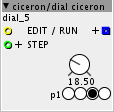
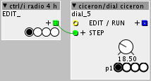
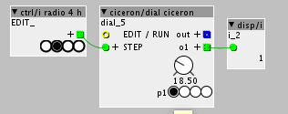

Hi,
I'm trying to make a weird dial which works like this :

the object is linked with another radio button which control the step (so I can edit several dial selecting one button like this :

The boolean input control the EDIT / RUN mode :
When we are in EDIT mode, we select one step with the radio, then we set/save the value on the dial.
When we are in RUN mode, the dial change with values that we set to it previously.
It's like a step sequencer, but with one dial.
At this time, I can :
change the radio button from my dial by the previous radio button object, but the visual doesn't update. Like this :

As you can see, my radio button is set to 1 and my dial outputs 1 but the dial's radio button is still at 0.
Can we update the visual ?
For the code I've just set
param_p1 = inlet_STEP; outlet_o1 = param_p1;
I can't :
set the value of the dial by the p1 parameter (my dial radio button) :
I've tried this where the param_value is my dial :
if (param_p1==0){ param_value=10;} if (param_p1==1){ param_value=20;} if (param_p1==2) {param_value=30;} if (param_p1==3) {param_value=40;} outlet_out= param_value;
but the param_value doesn't change as well and it doesn't output anything...
The next step is to save values then read it, but I don't think it will be a problem with my bool.
So does anyone know how to update the parameters visual of my object without using a disp function ?
And how to set the value of the dial with the radio button ?
Thank !